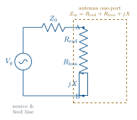
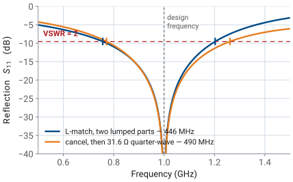
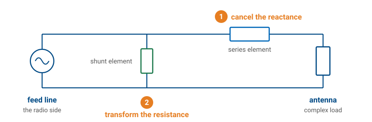
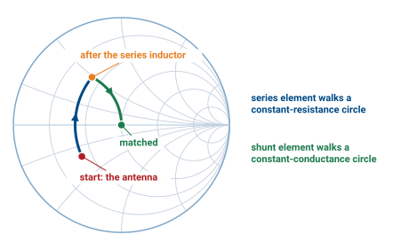
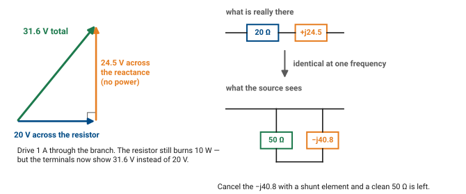
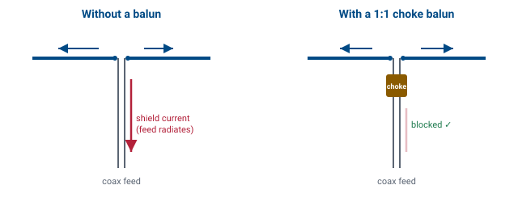

L4 - Impedance, Feeding, and Baluns#
Impedance, Feeding, and Baluns
The other side of the terminals — what the antenna looks like to the radio.
Lesson 4 · Antennas, Phased Arrays, and Radar Systems · Dr. Neil Rogers
Slides
Learning Objectives
- I can decompose an antenna's input impedance into radiation resistance, loss resistance, and reactance, and connect the radiation resistance to the power actually radiated.
- I can compute the reflection coefficient and VSWR a feed line sees at the antenna terminals, and the resulting mismatch loss.
- I can design a quarter-wave transformer — and read an L-match — to match a load to a feed line.
- I can explain why a balanced antenna needs a balun when you feed it from unbalanced coax, and identify the common balun types and what each one does.
Where we were
So far we have treated an antenna by what it radiates — pattern, directivity, gain, effective area. This lesson looks at the other side of the terminals: what the antenna looks like to the radio. Before a single watt can be radiated it has to get onto the antenna, and that is an impedance-matching problem.
The antenna is a one-port
Stand at the two feed terminals of an antenna and look in. Regardless of how complicated the structure is, at a single frequency it presents a complex input impedance
The resistive part splits into two physically distinct pieces:
Where the input power goes
Drive the terminals with a current of amplitude \(I_0\). The time-average power delivered to the antenna is
Radiation resistance is not a resistor

Radiation resistance \(R_\text{rad}\) is not a physical resistor. No component in the antenna gets warm from it.
The part doing the job
It is the equivalent resistance that would dissipate the same power the antenna carries away as radiation. It is the useful part of \(R_\text{in}\) — the part doing the job.
Loss resistance is the real dissipation
Loss resistance \(R_\text{loss}\) is the real dissipation: ohmic loss in the conductors, dielectric loss in nearby insulators. That power turns into heat and never leaves.
Radiation efficiency
The ratio of the two is exactly the radiation efficiency from Lesson 2:
Radiation resistance of a short dipole
For an infinitesimal (Hertzian) dipole of length \(\ell \ll \lambda\) — the idealization that carries a uniform current over its whole length — the radiation resistance works out to
A real center-fed short dipole cannot do that: the current has to go to zero at the open ends, so it falls off roughly triangularly from a peak at the feed. The average current is half the peak, the radiated power a quarter, and the radiation resistance a quarter as well:
Why small antennas are hard
The \((\ell/\lambda)^2\) dependence is the whole story of why small antennas are hard, and the factor of four makes it worse: a \(0.05\lambda\) center-fed dipole has \(R_\text{rad} \approx 0.49\ \Omega\). Put even a fraction of an ohm of conductor loss next to that and the efficiency collapses — a single ohm of loss resistance already puts \(\eta_\text{rad}\) under 35%. This is why electrically small antennas are so hard to feed efficiently. Make the antenna a half-wavelength long and the picture changes completely.
The half-wave dipole
At exactly \(\ell = \lambda/2\) the dipole presents about
The reactance is inductive. Trim the arms slightly — to roughly \(0.48\lambda\) — and the reactance cancels: the antenna is resonant, with
That near-\(70\ \Omega\), near-real impedance is why the half-wave dipole is the workhorse of antenna engineering: it is naturally close to standard feed-line impedances.
Reading the reactance
The sign of \(X_\text{in}\) tells you where you are relative to resonance:
Condition |
\(X_\text{in}\) |
Behavior |
|---|---|---|
Electrically short (\(\ell < \ell_\text{res}\)) |
\(X_\text{in} < 0\) |
capacitive |
Resonant (\(\ell = \ell_\text{res}\)) |
\(X_\text{in} = 0\) |
pure resistance |
Long (\(\ell > \ell_\text{res}\)) |
\(X_\text{in} > 0\) |
inductive |
Matching is easiest at resonance, where there is no reactance to cancel — only a resistance to transform.
Feeding — the reflection the source sees
The antenna connects to the radio through a feed line of characteristic impedance \(Z_0\) (coax is almost always \(50\ \Omega\); some TV/antenna hardware is \(75\ \Omega\) or \(300\ \Omega\)). When the antenna impedance \(Z_\text{in}\) does not equal \(Z_0\), part of the incident wave reflects back down the line. The reflection coefficient at the terminals is
and the standing-wave ratio it produces is
Mismatch loss
This is the same \(\Gamma\) / VSWR pair from Lessons 2 and 3 — now tied directly to the antenna’s impedance. The fraction of incident power that bounces back is \(|\Gamma|^2\), and the mismatch loss prices what that costs the antenna:
A perfectly matched antenna (\(Z_\text{in} = Z_0\)) has \(\Gamma = 0\), VSWR \(= 1{:}1\), and zero mismatch loss. As a rule of thumb, VSWR \(\le 2\) (return loss \(\ge 9.5\) dB, mismatch loss \(\le 0.5\) dB) is the usual “good enough” bar for a transmit antenna — but what the transmitter can survive sometimes sets the mismatch you can tolerate, not the fraction of a dB you lose. You will price this in this lesson’s practice set.
Reflection, VSWR and mismatch loss
Set the antenna’s resistance and reactance and watch the reflection coefficient, VSWR, and mismatch loss the feed line sees. Toggle a quarter-wave transformer (Part 3) to watch it pull a real load onto the \(50\ \Omega\) point.
The quarter-wave transformer
When the antenna impedance is not close to \(Z_0\), we insert a lossless network between the feed line and the antenna to transform the impedance so the source sees \(Z_0\). Two workhorses:
A quarter-wavelength section of line with characteristic impedance \(Z_1\) transforms a real load \(R_L\) to an input impedance
To match \(R_L\) to a feed line \(Z_0\), pick
Matching the resonant dipole
Worked example — a quarter-wave transformer for a resonant dipole
Match a resonant \(70\ \Omega\) dipole to \(50\ \Omega\) coax.
A quarter-wave section of \(\approx 59\ \Omega\) line does it.
The catch: the transformer is exactly \(\lambda/4\) only at one frequency, so the match is narrowband — it degrades as you move off the design frequency. And it only works directly on a real load, which is why we trim the dipole to resonance first.
“Real load only” is not a veto
“Real load only” is a requirement, not a veto — you can always make the load real first. Cancel the reactance with a series element, then transform what is left with a quarter-wave line. For the \(20 - j15\ \Omega\) antenna in the next section that is \(+j15\ \Omega\) in series, leaving \(20 + j0\ \Omega\), followed by a \(Z_1 = \sqrt{(50)(20)} = 31.6\ \Omega\) quarter-wave section.
That is a perfectly good design, and it is not the narrower one. Put both designs on the same axes and the answer is plain — they null at the same place and their VSWR \(\le 2\) bands differ by a few percent:
Comparing the two designs

So bandwidth does not decide it. What actually decides between them is what you are building on:
So which one?
Cancel + \(\lambda/4\) |
L-match |
|
|---|---|---|
Needs |
a line of \(Z_1 = \sqrt{Z_0 R_L}\) |
two lumped reactances |
\(Z_1 = 31.6\ \Omega\)? |
trivial on microstrip, unbuyable as cable |
not applicable |
Size at 1 GHz |
\(\approx 4\) cm of printed line |
two parts, millimetres |
Size at 2 MHz |
\(\approx 25\) m of coax |
two parts, millimetres |
So on a microwave PCB, where any \(Z_1\) can be printed and lumped parts have awkward parasitics, the quarter-wave route is often the better engineering. Down at HF, where \(\lambda/4\) runs to tens of meters and only 50 and 75 \(\Omega\) cable exists off the shelf, the L-match wins — which is why the matching lab is lumped.
The L-match
A quarter-wave transformer needs a real load and a quarter wavelength of line. For a complex load — or at frequencies where \(\lambda/4\) is inconveniently long — use a two-element L-network: one series reactance and one shunt reactance, which together reach any \(Z_0\) from any complex load. It is the minimal lumped matching network, and you already own the tool for reading it: the Smith chart from your transmission-lines course.
The L-match — solve one, learn the method

Rather than state the recipe and then demonstrate it, we will derive it by solving one problem all the way through. Everything you need is already on the table: the geometric mean from the quarter-wave section, and the Smith chart from your transmission-lines course.
An antenna presents \(Z_\text{in} = 20 - j15\ \Omega\) on a \(50\ \Omega\) line at a design frequency of 1 GHz. Match it.
Step 1 — Cancel the load reactance
The load is capacitive. Put \(+j15\ \Omega\) in series with it and the reactance is gone:
That reduces the problem to something familiar: match a real \(20\ \Omega\) to a real \(50\ \Omega\) line.
Step 2 — Two ways to transform 20 Ω to 50 Ω
(a) A quarter-wave transformer. From the section above, a \(\lambda/4\) line of
does it. This is a correct design — but a physically awkward one here. Coax is sold in \(50\) and \(75\ \Omega\); there is no \(31.6\ \Omega\) cable. And a quarter wavelength is only a convenient length in some bands: about 4 cm of printed line at 1 GHz, but roughly 25 m of coax at 2 MHz. On a microwave board the transformer often wins; with lumped parts at low frequency it does not.
(b) An L-network. A second series reactance plus a shunt reactance. Two lumped components, no transmission line, no exotic impedance to source.
Step 3 — What the L-network has to achieve
The two elements together must present \(50 + j0\ \Omega\) to the line. The strategy that gets there:
Use the series element to make the magnitude of the series branch equal the same geometric mean the transformer needed, \(\sqrt{(50)(20)} = 31.6\ \Omega\).
Use the shunt element to clean up the excess reactance that step leaves behind.
The quarter-wave line realizes \(31.6\ \Omega\) as a characteristic impedance; the L-network realizes it as a branch impedance magnitude. Same number, two ways of building it.
Step 4 — Size the series element
The branch resistance is stuck at \(20\ \Omega\) — a series element cannot change it — so the magnitude has to come from the reactance. Set the magnitude and solve:
Do not forget the \(+j15\ \Omega\) from Step 1. Both live in the same series branch, so the component you actually install supplies the sum:
At 1 GHz, \(X = \omega L\) gives
Step 5 — Size the shunt element
The second element sits in parallel, and admittances — not impedances — are what add in parallel. So transform the branch:
Look at the real part: \(1/\text{Re}\{Y\} = 1/0.0200 = 50\ \Omega\). That is the whole point of Step 4 — setting the magnitude to the geometric mean is exactly the condition that makes the parallel-equivalent resistance come out at \(Z_0\).
Canceling the shunt susceptance
All that is left is the \(-j0.0245\) S. Cancel it with an equal and opposite susceptance — a capacitor, since \(+jB\) is capacitive:
A 6.3 nH series inductor and a 3.9 pF shunt capacitor, both lossless, and the \(20 - j15\ \Omega\) antenna looks like \(50\ \Omega\) — at 1 GHz and nowhere else. Move 10% in frequency and both reactances are off by 10%.
The same design, on the Smith chart
The two moves are the two things the two elements are able to do.

A two-leg journey to the center
A series element changes reactance but not resistance, so it can only walk the operating point along a constant-resistance circle. A shunt element changes susceptance but not conductance, so it can only walk along a constant-conductance circle. Matching is therefore a two-leg journey to the center: walk the constant-resistance circle until you cross the unit-conductance circle, then walk that circle home.
Reading the arcs
Measure the arcs and you get \(+j39.5\ \Omega\) and \(3.9\) pF — the numbers you just computed. Note also that there is only one arc for the series element: you do not stop at the real axis after Step 1 and start again. Steps 1 and 4 are one component and one continuous move; splitting them is a thinking aid, not a parts list.
Work it yourself on paper — that is how the chart stops being a picture and starts being a tool. Printable copies: blank chart for the walk above, and a combined impedance-admittance chart for Step 5, where you need the constant-conductance circles overlaid on the constant-resistance ones.
Why a lossless element can change the resistance at all
Step 4 is easy to compute and hard to believe. How can adding a reactance, which dissipates nothing, change what the source thinks the resistance is?
Drive the branch \(20 + j24.5\ \Omega\) with 1 A. The resistor dissipates \(P = \tfrac{1}{2}|I|^2 R = 10\ \text{W}\), and nothing about the resistor changes. But the voltage across the whole branch is not 20 V, it is
The voltage lever
because the reactance’s voltage adds in quadrature with the resistor’s.

What the terminals can tell
Stand at the terminals with no way to see inside. You measure 31.6 V, and 10 W is being consumed. The only conclusion available to you is
The reactance is a lever on voltage that costs no power. The resistor is still 20 Ω burning 10 W; the source simply cannot tell that apart from a 50 Ω resistor.
Key Point
A shunt element alone could never do this. Put any reactance in parallel with 20 Ω and the apparent resistance only goes down — 17.2 Ω at \(-j50\), 19.2 Ω at \(-j100\), creeping toward 20 Ω but never past it. Only a series reactance can climb. That is why the order is forced: series element to raise the resistance, shunt element to cancel what the climb left behind.
Why switch to admittance?
The move that feels like a rabbit out of a hat is worth naming: it is forced by the topology. Impedances add in series; admittances add in parallel — and an L-network has one element of each kind. No single currency describes both moves.
Steering the series branch
Underneath that bookkeeping is a symmetry. Add a series reactance to a \(20\ \Omega\) branch: the series resistance never moves, but the parallel-equivalent resistance climbs.
series \(X\) added |
\(\text{Re}(Z)\) |
parallel equivalent \(\frac{1}{\text{Re}(Y)}\) |
|---|---|---|
\(0\) |
\(20\ \Omega\) |
\(20\ \Omega\) |
\(+j10\) |
\(20\ \Omega\) |
\(25\ \Omega\) |
\(+j24.5\) |
\(20\ \Omega\) |
\(50\ \Omega\) |
\(+j40\) |
\(20\ \Omega\) |
\(100\ \Omega\) |
Steering the shunt branch
Now put a shunt reactance across a \(20\ \Omega\) resistor and precisely the opposite happens — the conductance is pinned and the series-equivalent resistance falls.
shunt \(X\) across |
\(\text{Re}(Y)\) |
series equivalent \(\text{Re}(Z)\) |
|---|---|---|
none |
\(\frac{1}{20}\) |
\(20\ \Omega\) |
\(-j100\) |
\(\frac{1}{20}\) |
\(19.2\ \Omega\) |
\(-j50\) |
\(\frac{1}{20}\) |
\(17.2\ \Omega\) |
\(-j20\) |
\(\frac{1}{20}\) |
\(10.0\ \Omega\) |
Exact duals
The two elements are exact duals:
a series element cannot touch \(\text{Re}(Z)\), but it steers \(\text{Re}(Y)\)
a shunt element cannot touch \(\text{Re}(Y)\), but it steers \(\text{Re}(Z)\)
That is why Step 4 aimed at the admittance. You are after \(50\ \Omega\), and during the series move \(\text{Re}(Z)\) is frozen at \(20\ \Omega\) — a useless thing to aim at. The only quantity you can steer is \(\text{Re}(Y)\), so you steer it to \(\frac{1}{50}\). Then the shunt element is the perfect finisher: it cannot disturb \(\text{Re}(Y)\), so the \(50\ \Omega\) you earned is locked in, and its only remaining job is to cancel the susceptance.
It also explains why two series elements could never do it — they would just sum reactance, and \(\text{Re}(Z)\) would sit at \(20\ \Omega\) forever.
Where Q comes from
Matching references state the design in terms of a network \(Q\) rather than a geometric mean. That is the same result wearing different clothes, but \(Q\) is worth deriving properly rather than quoting, because it is the quantity that tells you what the match costs.
No formula involving \(R\) and \(X\) defines \(Q\). Energy defines it — the same definition you met for antennas in Lesson 3:
Deriving Q for the series branch
Evaluate that for our series branch. Drive it with a current of amplitude \(I_0\). The inductor’s peak stored energy and the resistor’s average dissipated power are
so
Where X/R comes from
That is where \(X/R\) comes from: it is not a definition, it is what the energy ratio evaluates to for a series branch. For our design,
The Q formula in the references
Now take the condition from Step 4, \(R_L^2 + X^2 = Z_0 R_L\), and divide through by \(R_L^2\):
the formula in the references, with \(R_\text{big}\) and \(R_\text{small}\) the larger and smaller of \(R_L\) and \(Z_0\). In that language the series reactance is \(Q R_\text{small}\) and the shunt reactance is \(\frac{R_\text{big}}{Q}\) — check: \(\frac{50}{1.22} = 40.8\ \Omega\), and \(\frac{1}{2\pi(10^9)(40.8)} = 3.9\) pF, the same capacitor.
What Q costs you
Two things follow, and they are the reason to bother with \(Q\) at all:
You do not get to choose it. The transformation ratio \(Z_0/R_L\) sets \(Q\) completely. Wanting a gentler match is not an option the physics offers.
It is stored energy over dissipated energy — the same ratio that set bandwidth in Lesson 3. High \(Q\) means a lot of energy sloshing between the inductor and capacitor for every watt delivered, and that is exactly what makes the match narrowband. Transform further, get a higher \(Q\), get less bandwidth. An electrically small antenna, with its fraction of an ohm of radiation resistance, needs an enormous \(Q\) to reach \(50\ \Omega\) — which is precisely why it is so painful to feed over any useful bandwidth.
A band-limited fix
Note
Every matching network is a band-limited fix. You can force \(\Gamma = 0\) at one frequency easily; holding it low across a wide band is exactly the bandwidth-versus-size fight from Lesson 3 (Chu-Harrington). Matching buys you bandwidth only up to the antenna’s own \(Q\).
Baluns: balanced meets unbalanced
A dipole is a balanced structure: two symmetric arms carrying equal and opposite currents, with no reference to ground. Coax is an unbalanced line: signal on the center conductor, return on the inside of the shield, with the shield’s outside tied (electrically) to ground.
Connect coax straight to a dipole and you have a problem. The two dipole arms present different impedances to the coax, so the currents on the arms are no longer equal and opposite. The leftover common-mode current flows back down the outside of the shield — a third conductor the model forgot about.
The shield-current problem

That shield current has real consequences:
What the shield current costs you
The feed line radiates. Your coax becomes part of the antenna, distorting the pattern in ways that depend on how the cable is routed.
The pattern skews and the front-to-back ratio degrades, because the antenna is no longer symmetric.
RF appears on the equipment chassis, causing measurement errors and, in transmit systems, “RF in the shack.”
The fix: a balun
The fix is a balun (balanced-to-unbalanced), inserted at the feed point. Its job is to force equal-and-opposite currents on the two arms and to present a high impedance to common-mode current on the shield. Common types:
Balun |
Purpose |
Use |
|---|---|---|
Choke / current balun (ferrite beads, coiled coax, sleeve/”bazooka”) |
Adds a high common-mode impedance in series with the shield outside, choking off feed-line current |
The default 1:1 dipole feed |
The fix: a balun, continued
Balun |
Purpose |
Use |
|---|---|---|
Voltage balun (transformer) |
Forces balanced voltages across the load |
Where a symmetric voltage drive is needed |
Half-wave (4:1) balun |
Uses a \(\lambda/2\) line to both balance and transform impedance 4:1 |
Feeding a \(\approx 300\ \Omega\) folded dipole from \(75\ \Omega\) |
A balun can do two jobs at once
A balun can therefore do two jobs at once — balance the feed and transform impedance — which is why the 4:1 half-wave balun is so common on folded dipoles. For most straight dipoles, a 1:1 current (choke) balun is all you need: it does not change the impedance, it just keeps the antenna radiating instead of the coax.
Key Point
Impedance is where the antenna meets the radio. Radiation resistance sets how much of your power leaves as radiation; the reactance and mismatch decide how much power even makes it onto the antenna; and the balun makes sure it is the antenna radiating and not your feed line.
Summary — impedance
Symbol / idea |
What it is |
Number to remember |
|---|---|---|
\(Z_\text{in} = R_\text{in} + jX_\text{in}\) |
What the radio sees at the terminals |
Half-wave dipole: \(73 + j42.5\ \Omega\); resonant at \(\approx 0.48\lambda\), \(\approx 70 + j0\ \Omega\) |
\(R_\text{rad}\) |
Equivalent resistance for power carried away as radiation — the useful part |
Short dipole (triangular current): \(20\pi^2(\ell/\lambda)^2\), so \(0.49\ \Omega\) at \(0.05\lambda\) |
Summary — loss and efficiency
Symbol / idea |
What it is |
Number to remember |
|---|---|---|
\(R_\text{loss}\) |
Real ohmic and dielectric dissipation — becomes heat |
A single ohm next to a small antenna is fatal |
\(\eta_\text{rad}\) |
Radiation efficiency, the split between the two resistances |
\(\eta_\text{rad} = \frac{R_\text{rad}}{R_\text{rad} + R_\text{loss}}\), \(G = \eta_\text{rad} D\) |
Summary — feeding and mismatch
Symbol / idea |
What it is |
Number to remember |
|---|---|---|
\(\Gamma\) |
Reflection coefficient at the terminals |
\(\Gamma = \frac{Z_\text{in} - Z_0}{Z_\text{in} + Z_0}\); \(\vert\Gamma\vert^2\) of the power bounces back |
VSWR / return loss |
Two readings of the same mismatch |
VSWR \(\le 2\) ↔ return loss \(\ge 9.5\) dB ↔ 11% of the power reflected |
Mismatch loss |
The dB the mismatch actually costs you |
\(-10\log_{10}(1 - \vert\Gamma\vert^2)\); \(\le 0.5\) dB at VSWR \(= 2\) |
Summary — matching and baluns
Symbol / idea |
What it is |
Number to remember |
|---|---|---|
\(Z_1 = \sqrt{Z_0 R_L}\) |
Quarter-wave transformer, real loads only |
\(70\ \Omega\) to \(50\ \Omega\) needs \(\approx 59\ \Omega\) line |
L-match \(Q\) |
Two lumped elements: cancel \(X\), then transform \(R\) |
\(Q = \sqrt{\frac{R_\text{big}}{R_\text{small}} - 1}\); \(20 - j15\ \Omega\) at 1 GHz → 6.3 nH series, 3.9 pF shunt |
Balun |
Kills common-mode current on the coax shield |
1:1 choke is the default dipole feed; 4:1 half-wave balun also transforms \(300\ \Omega \to 75\ \Omega\) |
Practice
Where this is going
You can now read an antenna’s terminals as a circuit: split \(Z_\text{in}\) into radiation and loss, turn the mismatch into \(\Gamma\), VSWR, and lost dB, match a load with a quarter-wave section or an L-network, and specify the right balun. Every one of those numbers is something you would want to measure — and that is where the next lesson comes in.
Lesson 5 — Field Regions
Lesson 5 (Field Regions) steps back out into space and asks where the radiated fields settle into their far-field form. It matters more than it sounds: a pattern, a gain, an effective aperture — none of them mean anything until you are far enough away for the field to have stopped rearranging itself, and the boundary \(r \ge 2D^2/\lambda\) is what tells you how far that is. Measure a 3-meter reflector at 10 meters and you are not measuring its pattern; you are measuring a near-field artifact. Before next lesson, reread the far-field criterion from Lesson 2 and come ready to say where it comes from.